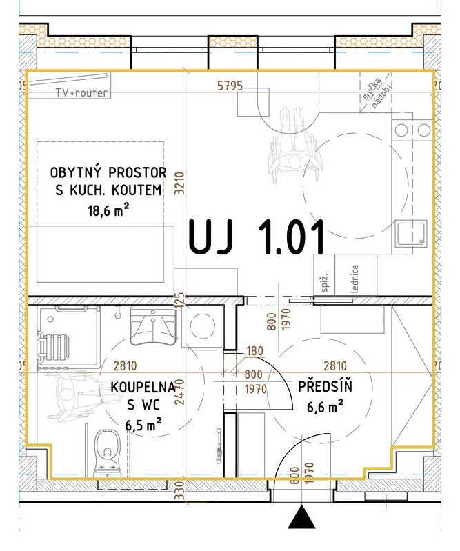
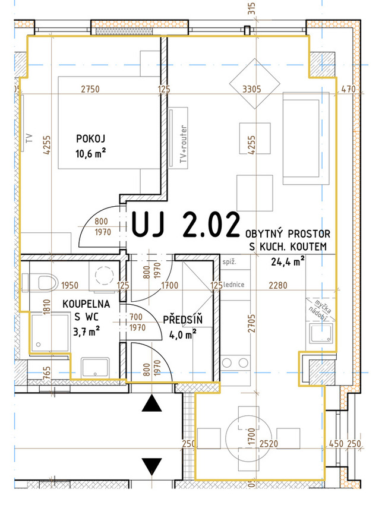
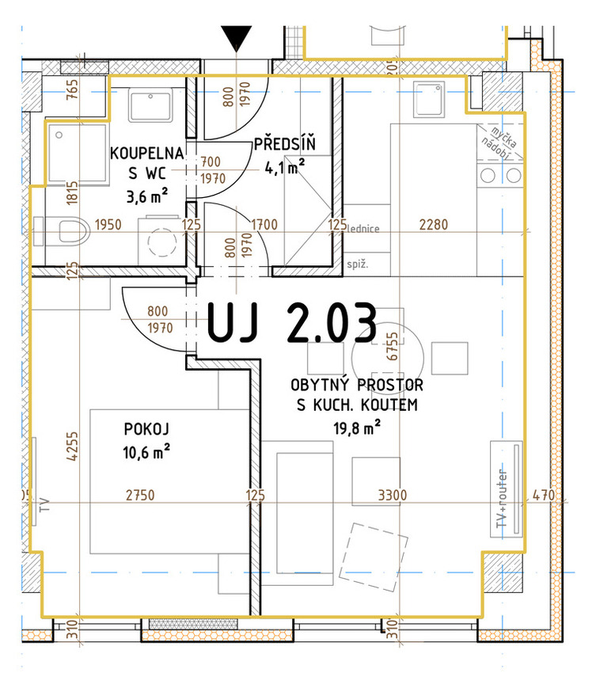

Ubytovací jednotka
Na prodejUJ 01

Detail a půdorys ↗- Dispozice
- 1+kk
- Plocha dle ceníku
- 33,2 m²
Podlaží1NP
Nabídková cena2 757 000 Kč
KOUPELNÍ 2 · HODONÍN
Prohlédněte si současnou podobu domu, nahlédněte do interiérů a vyberte prostor pro své plány.

O PROJEKTU
Aktuální fotografie, skutečné dispozice a podklady přímo od projektu.

Nové využití pro známý dům v Hodoníně.
Rekonstrukce administrativního objektu přináší ubytovací jednotky i komerční prostory. První etapa má kolaudaci za sebou, další části se dokončují.
UVNITŘ DOMU
Tři vzorové jednotky, koupelny a společné prostory.
Podívejte se na aktuální povrchy, místnosti i detaily. Fotografie zachycují současný stav včetně probíhajícího dokončování.
Prohlédnout galerii


Výběr ze skutečných interiérůŘíjen 2026
NABÍDKA PROSTORŮ
Dispozice, plocha a cena přehledně u každé jednotky.

Detail a půdorys ↗
Detail a půdorys ↗
Detail a půdorys ↗Ceny a dostupnost podle nabídky z 25. 10. 2026. Aktuální stav potvrdí prodejce.
Celá nabídka jednotekLOKALITA

Sport, voda a městský život v okolí Koupelní ulice.
OSOBNÍ PROHLÍDKA
Vyberte si jednotku a domluvte si termín s prodejcem projektu, Ing. Jarmilou Hazukovou.